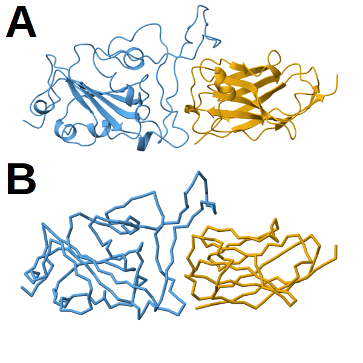
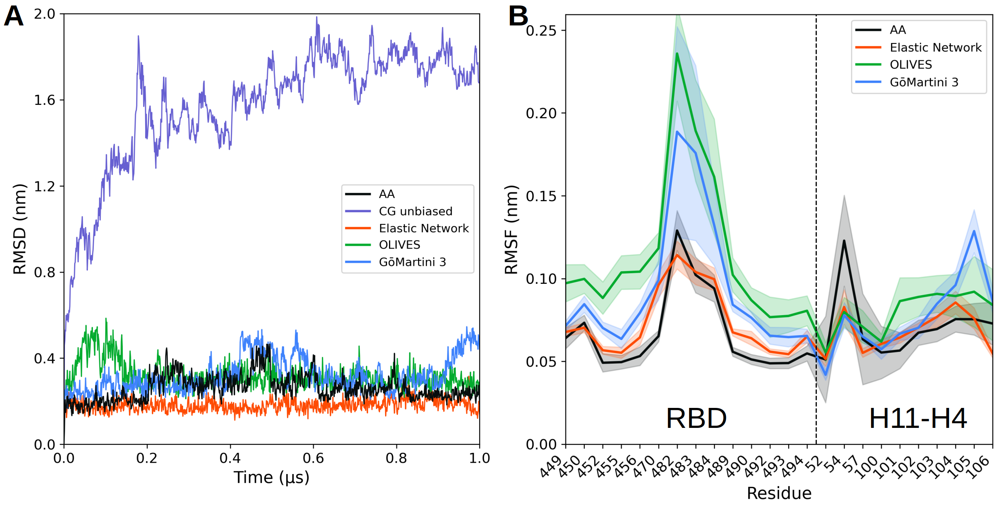
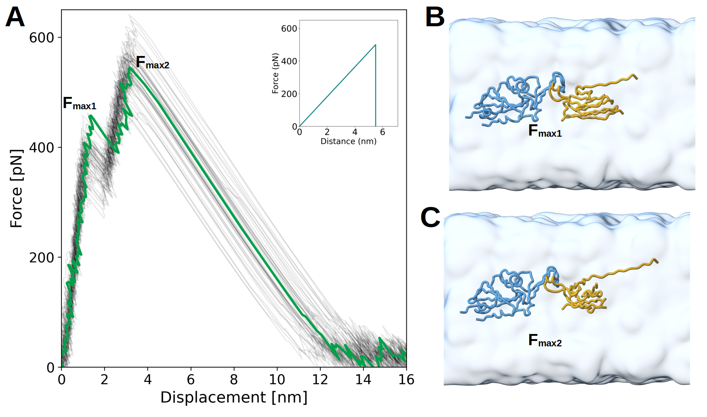

Protein complex models
In case of issues, please contact fcofas@comunidad.unam.mx or apoma@ippt.pan.pl.
Summary
Part I. Protein complexes at equilibriumPart II. Protein complex under conformational changes: A nanomechanical studyTools and scripts used in this tutorialReferences
Part I. Protein complexes at equilibrium
The global spread of SARS-CoV-2 has made clear the need to characterize spike protein dynamics and binding stability at scale. Understanding how mutations affect both overall fold and specific receptor or nanobody interfaces under near-physiological conditions is essential for predicting variant infectivity and guiding therapeutic design. In this tutorial, we’ll implement and compare equilibrium coarse-grained (CG) strategies using the Martini 3 force field [1] to extend sampling to microsecond time scales without sacrificing key structural features. We then benchmark these approaches against full atomistic simulations to assess which approximation most faithfully reproduces protein flexibility at binding interfaces. We’ll need a GROMACS version >= 2023.5 [2].
This section is not intended to capture large conformational changes. If you plan to to do so, please go to Part II - Protein complex under conformational changes: A nanomechanical study
Protein complex preparation
The structure with PDB ID 6ZH9 corresponds to a ternary complex composed of the receptor-binding domain (RBD) of the wild-type SARS-CoV-2 spike protein bound to the nanobody H11-H4 and the antibody CR3022. In this tutorial, we will focus specifically on the nanobody H11-H4, which engages the RBD at the receptor-binding interface and plays a critical role in neutralizing viral entry [12]. All worked and template files for this tutorial can be download from here. If you want to skip the below preparation, the file ready to use, 6ZH9_clean.pdb, is in the template folder.
- Obtain the atomistic structure of the ternary complex from the Protein Data Bank here
Alternatively, the file is available in the template folder
- Before using
martinize2, the atomistic structure must be cleaned and standardized:
- Remove water molecules and crystallographic additives, as these are not needed for GG modeling.
- Fix any missing residues or loops using your preferred modeling tool (e.g., AlphaFold2, Modeller, etc.).
- Cofactors are not handled in this tutorial. If your system includes essential cofactors, they must be treated separately.
- Trim the system to the relevant components The structure contains multiple chains corresponding to antibodies and the RBD. For this tutorial, retain only the RBD and nanobody:
- Delete chains HHH and LLL, which correspond to the antibody CR3022.
- Rename the remaining chain IDs for clarity:
- Change EEE to E → RBD
- Change FFF to F → H11-H4 nanobody
These modifications can be done using molecular visualization tools such as Chimera, ChimeraX, PyMOL, or VMD.
Protein complex without a structural bias
In this section we will generate a CG model of the RBD/H114 complex using MARTINI 3.0.1 without tertiary structure bias. We will then:
Step 1. Generate the CG topology Step 2. Set up the simulation box Step 3. Solvate the system Step 4. Add ions Step 5. Perform energy minimization Step 6. Equilibrate under NPT conditions Step 7. Run the production simulation
Step 1. Generate coarse-grained topology
The cleaned PDB structure can now be used as input for martinize2 to generate both the CG structure and the corresponding Martini 3 topology file[3]. Installation instructions for martinize2 are available online. Please note that martinize2 may not be compatible with older versions of Python; it is known to work reliably with Python versions above 3.9. To explore the available options, refer to the help function by running martinize2 -h. A general recommendation for any system simulated with Martini is to apply position restraints, particularly on the backbone, during the equilibration phase. This allows the side chains to relax and adjust to solvent interactions without disrupting the overall fold. To support this, martinize2 can automatically generate a list of atoms to be restrained. A typical command for running martinize2 might look like the following:
martinize2 -f 6ZH9_clean.pdb -o topol.top -x 6ZH9_CG.pdb -dssp /path/to/dssp -p backbone -ff martini3001 -merge all -ignhTo run martinize2, we provide the input structure with the -f flag and specify two output files: a topology file using -o and a coordinate file for the structure mapped to Martini resolution using -x. The mapping will be done according to version 3 of the Martini force field, as indicated by the -ff flag.
To incorporate structural information into the CG model, we must also provide secondary structure data. Martinize2 offers several ways to supply this information:
The -dssp option attempts to use the mdtraj Python module, which must be installed in the same environment as martinize2.
Alternatively, -dssp /path/to/dssp will invoke a DSSP binary at the specified path to extract secondary structure information directly from the structure. This binary can be downloaded from https://github.com/cmbi/dssp/releases. It is important to use version 3.1.4 or earlier, as later versions are not compatible due to output format changes. If DSSP is installed system-wide, the typical path is /usr/bin/mkdssp.
A third option is to manually provide the secondary structure using the -ss flag followed by a DSSP-formatted string. This string must have the same number of characters as there are residues in the protein and should follow the DSSP notation:
H = α-helix, B = residue in isolated β-bridge, E = extended strand (β-sheet), G = 3₁₀-helix, I = π-helix, T = hydrogen-bonded turn, S = bend, C = coil or irregular.
If everything went correctly, martinize2 will have generated three essential files: the CG structure in PDB format (.pdb), the master topology file (topol.top), and the individual protein topology file (molecule_0.itp). To proceed with running a simulation, you will need two additional files: the Martini force field topology file (typically named martini_v3.0.0.itp) and a GROMACS run parameter file (.mdp). Example versions of these files can be found on the official Martini website or in the provided template folder. Make sure to adapt the parameter settings in the .mdp file and the topology as needed for your specific system.
 Figure 1. Structural models of the RBD/H11-H4 complex. A) Atomistic model shown in cartoon representation. B) Corresponding CG model using the Martini framework. In both panels, the receptor-binding domain (RBD) is colored in blue and the nanobody H11-H4 in orange. All representations were prepared with ChimeraX[11].
Once the CG model has been generated, it’s important to ensure that the topology file topol.top is correctly configured for a Martini 3 simulation. This file should include the appropriate force field definitions and reference the generated protein topology. A minimal working version of topol.top should look like this:
#include "martini_v3.0.0.itp"
#include "molecule_0.itp"
#include "martini_v3.0.0_ions_v1.itp"
#include "martini_v3.0.0_solvents_v1.itp"
[ system ]
SYSTEM NAME
[ molecules ]
molecule_0 1After that, we need to modify the default force constant used for position restraints in the molecule_0.itp file. By default, martinize2 may write a placeholder such as POSRES_FC, which must be replaced with an actual numerical value. In this case, we want to set the force constant to 1000 kJ mol⁻¹ nm⁻². This can be done using sed, a command-line tool for editing files in-place. Run the following command:
sed -i 's/POSRES_FC/1000/g' molecule_0.itpThis command searches for all instances of POSRES_FC in the molecule_0.itp file and replaces them with 1000, ensuring that the position restraints are properly defined for use during equilibration or production runs.
Step 2. Set up the simulation box
To prepare the system for solvation and subsequent simulation, the first step is to center the CG complex in a simulation box. We use gmx editconf to place the structure in the center of a cubic box with 2.0 nm of padding between the solute and the box edges. This padding ensures that the solute does not interact with its periodic images. The command is as follows:
gmx editconf -f 6ZH9_CG.pdb -bt cubic -d 2.0 -c -o 6ZH9_CG.groHere:
-f 6ZH9_CG.pdb specifies the input structure,
-bt cubic sets the box type to cubic,
-d 2.0 defines the distance (in nm) between the solute and the box boundary,
-c centers the molecule in the box,
-o 6ZH9_CG.gro defines the output file in GROMACS .gro format.
Once the structure is centered and converted, we prepare the topology file. Make a copy of the previously edited topol.top file and rename it to system.top, which is the standard name expected in GROMACS workflows:
cp topol.top system.topThis ensures consistency in file naming and keeps the original topology intact for reference.
Step 3. Solvate the system
The next step is to solvate the simulation box using Martini water beads. This is done with the gmx solvate command, which fills the defined box with CG water molecules while avoiding overlap with the protein structure.
Use the following command:
gmx solvate -cp 6ZH9_CG.gro -cs water.gro -radius 0.21 -o solvated.gro -p system.top-cp 6ZH9_CG.gro: specifies the centered and boxed protein structure as input.
-cs water.gro: provides the coordinate file containing Martini water beads (usually included in the Martini package).
-radius 0.21: sets the minimal distance (in nm) allowed between solute and solvent atoms, adapted for CG resolution.
-o solvated.gro: defines the output structure file with water molecules added.
-p system.top: automatically updates the topology file to include the number of added water molecules.
This command prepares the system for ion addition and energy minimization by embedding the CG complex in a fully solvated environment.
Step 4. Add ions
To prepare the system for ion placement, we first need to generate a binary input file (.tpr) using the gmx grompp command. This step requires a minimal parameter file, typically named ions.mdp, which defines basic settings for preprocessing (e.g., cutoffs, integrator). Use the following command:
gmx grompp -f ions.mdp -c solvated.gro -p system.top -o ions.tpr -maxwarn 1-f ions.mdp specifies the parameter file.
-c solvated.gro is the input structure after solvation.
-p system.top is the updated topology.
-o ions.tpr is the binary run input file used by genion.
-maxwarn 1 allows grompp to proceed even if a minor warning is raised (e.g., due to missing velocities or box size mismatches).
Once the .tpr file is ready, ions are added to neutralize the system and set the ionic strength to 0.15 M. The gmx genion command replaces solvent beads with sodium (NA) and chloride (CL) beads accordingly:
echo W | gmx genion -s ions.tpr -o system_solv_ions.gro -p system.top -pname NA -nname CL -neutral -conc 0.15-s ions.tpr: input run file from grompp.
-o system_solv_ions.gro: output structure with ions added.
-p system.top: topology file, which is updated with the ion counts.
-pname NA and -nname CL: specify the names of the positive and negative ions.
-neutral: ensures overall charge neutrality.
-conc 0.15: sets the target salt concentration to 0.15 mol/L.
This step finalizes the setup of the solvated and neutralized CG system, ready for energy minimization and equilibration.
Step 5. Energy minimization
The final preparation step before equilibration is to perform energy minimization of the solvated and ionized system. This ensures that any steric clashes or high-energy contacts introduced during solvation and ion addition are relaxed.
First, use gmx grompp to generate the minimization input file (.tpr) and then, launch the minimization run using gmx mdrun:
gmx grompp -p system.top -c system_solv_ions.gro -f minimization.mdp -r system_solv_ions.gro -o minimization.tpr
gmx mdrun -deffnm minimization -v -nt 6 -pin on -gpu_id 0 -pinoffset 0-deffnm minimization: sets the base name for input/output files (e.g., minimization.log, minimization.gro, etc.).
-v: enables verbose output.
-nt 6: runs with 6 CPU threads.
-pin on: enables CPU core pinning for performance consistency.
-gpu_id 0: selects GPU 0 (optional, only applicable if GROMACS was compiled with GPU support).
-pinoffset 0: ensures correct CPU affinity (optional; relevant for multi-GPU nodes).
Step 6. Equilibration under NPT conditions
To stabilize the system’s density and pressure under near-physiological conditions, the next step is to perform NPT equilibration. This simulation phase is carried out in the constant number of particles, pressure, and temperature ensemble. The setup involves generating a new input .tpr file and running the equilibration with gmx mdrun.
gmx grompp -p system.top -c minimization.gro -f npt.mdp -r minimization.gro -o npt.tpr -maxwarn 2
gmx mdrun -deffnm npt -v -nt 6 -pin on -pinoffset 0 -gpu_id 0 -nb gpu -bonded gpu -dlb autoStep 7. Production simulation
The final step is to launch the production simulation under fully equilibrated conditions. This is the stage where the system evolves freely and data are collected for analysis.
gmx grompp -p system.top -c npt.gro -f dynamic.mdp -o dynamic.tpr -maxwarn 1 -t npt.cpt
gmx mdrun -deffnm dynamic -v -nt 6 -pin on -pinoffset 0 -nb gpu -bonded gpu -dlb autoProtein complex with elastic network
In this step, we convert the atomistic structure of the protein complex into a coarse-grained representation using the Martini 3.0.0 force field, with the addition of an elastic network model (ENM). The elastic network is a set of harmonic springs applied between backbone beads within a defined cutoff range. It preserves the native tertiary and quaternary structure by maintaining the relative distances between residues, effectively stabilizing the folded conformation during the simulation. This is particularly important for large protein complexes, where thermal fluctuations can otherwise lead to partial unfolding or loss of structural integrity in CG models [14].
martinize2 -f 6ZH9_clean.pdb -o topol.top -x 6ZH9_CG.pdb -dssp /path/to/dssp -p backbone -ff martini3001 -elastic -ef 700.0 -el 0.5 -eu 0.9 -ea 0 -ep 0 -merge all -ignhOverwrite or modify the topology as stated above. Also modify the POSRES_FC place holder with the sed command previously stated.
Proceed with steps 2 to 7 as described in the Protein complex without a structure bias section. These include box setup, solvation, ion addition, energy minimization, NPT equilibration, production run, trajectory alignment, and topology preparation for visualization.
 Figure 2. Licorice representation of the RBD/H11-H4 backbone showing the elastic network model. Intra-chain harmonic restraints are depicted in black, and inter-chain restraints in green. Figure generated with ChimeraX [11].
Figure 2. Licorice representation of the RBD/H11-H4 backbone showing the elastic network model. Intra-chain harmonic restraints are depicted in black, and inter-chain restraints in green. Figure generated with ChimeraX [11].
Protein complex with OLIVES
To better preserve tertiary and quaternary structures in CG simulations, Gō-like models can be integrated with the Martini 3 force field, as introduced by Poma et al. (2017)[4]. In this step, we stabilize the structure of the CG protein complex using the OLIVES model, a Gō-like potential specifically designed to capture native hydrogen bonding patterns in Martini 3 proteins. Unlike traditional elastic networks or uniform Gō-models, OLIVES identifies native contacts capable of forming hydrogen bonds and introduces chemically informed Lennard-Jones interactions between donor–acceptor bead pairs. These interactions are separated into secondary (backbone–backbone) and tertiary (side-chain–backbone or side-chain–side-chain) networks, mimicking realistic intramolecular and interfacial hydrogen bonding [15].
OLIVES improves structural fidelity by recovering missing hydrogen bond contributions in the CG representation and eliminates the need for DSSP-based secondary structure restraints. It also allows stabilizing both tertiary and quaternary structures without extensive biasing, thus enabling more realistic folding, unfolding, and complex formation events. This approach is particularly valuable for protein–protein interfaces where standard CG models may underestimate stability without additional restraints .
martinize2 -f 6ZH9_clean.pdb -o topol.top -x 6ZH9_CG.pdb -dssp /path/to/dssp -p backbone -ff martini3001 -merge all -ignhpython OLIVES_v2.0.1_M3.0.0.py -c 6ZH9_CG.pdb -i molecule_0.itpContinue with step 2. Then, run the following:
gmx make_ndx -f 6ZH9_CG.gro -o BB.ndx <<< 'del 0-19
a BB
q
'gmx genrestr -f 6ZH9_CG.gro -n BB.ndx -o posre_BB.itpEdit the topology as stated in step1. Also modify the POSRES_FC with the command sed stated in the same step.
Create a copy of the topology
cp topol.top system.topProceed with steps 3 to 7 as described in the Protein complex without a structure bias section.
 Figure 3. Licorice representation of the RBD/H11-H4 backbone showing the OLIVES model. Intra-chain harmonic restraints are depicted in black, and inter-chain restraints in green. Figure generated with ChimeraX [11].
Figure 3. Licorice representation of the RBD/H11-H4 backbone showing the OLIVES model. Intra-chain harmonic restraints are depicted in black, and inter-chain restraints in green. Figure generated with ChimeraX [11].
Protein complex with GōMartini 3
The enhanced GōMartini 3 implementation, described by Souza et al. (2025)[7], improves on the original scheme with three key modifications:
Virtual-site Gō beads: Gō interactions are applied to virtual sites co-located with backbone beads, treated as standard non-bonded pairs.
Exclusion of native non-bonded terms: Default Martini interactions between Gō-connected residues are excluded to avoid double-counting.
Distance bounds: Lower and upper cutoffs are applied to restrict Gō interactions within a defined range.
These virtual interactions are encoded in martini_v3.0.0.itp, and activated when #define GO_VIRT is included in the system topology. This works similarly to how POSRES is handled.
The Gō contact map can be calculated using the web server available at GoContactMap. Alternatively, recent versions of martinize2 also support the generation of Gō contact maps directly.
Upon using the -go flag, martinize2 will:
- Read or generate the contact map
- Add Gō virtual beads
- Define Gō contact interactions
- Exclude native non-bonded terms
This makes it possible to generate a fully functional GōMartini model from a cleaned PDB structure with a single command, such as:
martinize2 -f 6ZH9_clean.pdb -o topol.top -x 6ZH9_CG.pdb -dssp /route/to/dssp -p backbone -ff martini3001 -go-eps 15.00 -go -maxwarn 4 -merge all -ignh -name molecule_0The command shown above generates all required topology and structure files for performing GōMartini simulations of the protein using martinize2. This includes virtual Gō beads, native contact-based interactions, and the appropriate exclusions of default non-bonded terms between backbone beads connected by Gō-like bonds.
As mentioned earlier, the protein topology file (molecule0.itp) generated by martinize2 now includes additional virtual sites placed directly on top of the backbone beads. These virtual sites serve as anchoring points for the Gō-like interactions and are referenced in two auxiliary files:
go_atomtypes.itp: contains an [ atomtypes ] directive that defines the properties of the virtual Gō beads.
go_nbparams.itp: contains a [ nonbond_params ] directive that defines the Gō-like interactions between pairs of virtual sites, according to the native contact map.
To enable these additional non-bonded interactions during the simulation, you must insert the appropriate #include statements into the martini_v3.0.0.itp force field file. This ensures that the simulation engine recognizes the virtual Gō atom types and their interaction parameters.
Note: If you are using the .itp files provided in the template folder, you do not need to manually add the #include statements for the GōMartini 3 model. These modifications have already been applied to the martini_v3.0.0.itp file included in that folder.
sed -i "s/\[ nonbond_params \]/\#ifdef GO_VIRT\n\#include \"go_atomtypes.itp\"\n\#endif\n\n\[ nonbond_params \]/" martini_v3.0.0.itpecho -e "\n#ifdef GO_VIRT \n#include \"go_nbparams.itp\"\n#endif" >> martini_v3.0.0.itpImportant: These modifications to martini_v3.0.0.itp should be done only once, regardless of how many proteins or simulations use Gō-like interactions. Repeating the inclusion or duplicating entries may lead to errors or unintended behavior during preprocessing.
The topol.top file must be updated to activate the GōMartini features by defining the GO_VIRT preprocessor variable. This ensures that the virtual sites and Gō-specific interaction parameters are included during simulation setup. The file should look as follows:
#define GO_VIRT
#include "martini_v3.0.0.itp"
#include "molecule_0.itp"
#include "martini_v3.0.0_ions_v1.itp"
#include "martini_v3.0.0_solvents_v1.itp"
[ system ]
SYSTEM NAME
[ molecules ]
molecule_0 1This will ensure that the virtual site definitions and Gō-like nonbonded interactions are properly included in the simulation.
Proceed with steps 2 to 7 as described in the Protein complex without a structural bias section.
 Figure 4. Licorice representation of the RBD/H11-H4 backbone illustrating the GōMartini 3 model. Intra-chain native contacts are shown in black, while inter-chain contacts are shown in green. Figure generated with ChimeraX[11].
Figure 4. Licorice representation of the RBD/H11-H4 backbone illustrating the GōMartini 3 model. Intra-chain native contacts are shown in black, while inter-chain contacts are shown in green. Figure generated with ChimeraX[11].
Comparison between Martini 3 protein complex models
Table 1. Number of native contacts defined in each coarse-grained model. The table summarizes the number of native contacts determined to the RBD–nanobody interface, as well as intra-domain contacts within the RBD and within the nanobody, for three coarse-grained models: Elastic Network, OLIVES, and GōMartini 3.
| Model | # interface contacts | # intra contacts RBD | # intra contacts Nb | Total contacts |
|---|---|---|---|---|
| EN | 53 | 837 | 553 | 1443 |
| OLIVES | 12 | 246 | 169 | 427 |
| GōMartini 3 | 26 | 393 | 283 | 702 |
 Figure 5. Structural stability and residue-level fluctuations across modeling approaches. A) Root-mean-square deviation (RMSD) of the protein backbone over a 1 μs simulation comparing all-atom (AA), elastic network (EN), OLIVES, and GōMartini 3 models. The inset shows the same data with a different y-axis scale to highlight differences among CG models. The AA trajectory exhibits greater structural deviation compared to the CG models, which remain stable throughout the simulation. B) Root-mean-square fluctuation (RMSF) per residue. Residues 449–494 correspond to the RBD, and residues 100–106 to H11-H4, separated by a dashed line.
Part II. Protein complex under conformational changes: A nanomechanical study
AFM-SMFS captured by Steered Molecular Dynamics (SMD) simulation
Nanomechanical characterisation probes how protein complexes respond to externally applied forces and uncovers dissociation pathways and energy barriers. By using SMD simulation within the Martini 3 CG framework augmented by GōMartini 3 virtual-site contacts[7], we attach defined pulling anchors to key residues and generate force-extension profiles at biologically relevant pulling speeds. This approach captures critical rupture events and force propagation pathways across the RBD and an engineered nanobody, highlighting the influence of variant mutations on mechanical stability [2]. CG-SMD simulation bridges the gap between high-cost AA-MD simulations and experimental single molecular force spectroscopy (SMFS) [9,10].
Protein alignment along the Z-axis
The complex can be prepared as described in section Protein preparation. All worked and template files for this tutorial can be download from here. If you want to skip the preparation step, the file ready to use, 6ZH9_clean.pdb, is in the template folder.
We’ll use align_pdb.py script to bring the pulling axis onto the z‑axis, and then we will add missing atoms and hydrogens with pdbfixer.
First, make sure you have python 3, numpy, biopython installed. In your terminal run:
python align_pdb.py <input_pdb> <output_pdb> <chain1> <res1> <chain2> <res2> --axispython align_pdb_.py 6ZH9_clean.pdb 6ZH9_aligned.pdb E 195 F 128 --axis ZThis reads 6ZH9_clean.pdb, locates the two CA atoms you specified, computes the rotation that brings their connecting line onto the Z‑axis, applies that transform to every atom, and writes the result to 6ZH9_aligned.pdb.
To generate the Martini 3/GoMartini 3 model, please follow the instructions in the Protein complex with GōMartini 3 section using the 6ZH9_aligned.pdb file. From martinize2 you’ll get the new 6ZH9_CG.pdb file.
Step 2. Set up the simulation with a large box
Prepare the system for solvation and subsequent simulation with the following command:
gmx editconf -f 6ZH9_CG.pdb -center 5.000 5.000 6.000 -box 10.000 10.000 60.000 -o 6ZH9_WT_pull_CG.groCopy the topology and rename it as system.top
cp topol.top system.topProceed with steps 3 to 6 as described in the Protein complex without a structural bias section.
After step 6, we need to create an index file to apply the freeze protocol and to perform the CG-SDM:
gmx make_ndx -f npt.gro -o index.ndx
a 786 787 788 789 790 791
name 15 Pull_A
a 471 472 473 474 475 476
name 16 Pull_B
q7. Run the production simulation
The final step is to launch the production simulation under fully equilibrated conditions.
gmx grompp -p system.top -c npt.gro -f pull.mdp -o pull1.tpr -maxwarn 1 -t npt.cpt -r npt.gro
gmx mdrun -deffnm pull1 -v -nt 6 -pin on -pinoffset 0 -nb gpu -bonded gpu -dlb auto -pf pullf1.xvg -px pullx1.xvg Figure 6. Force–displacement profiles from CG-SMD simulations and AA-SMD reference. A) Mechanical unfolding profiles obtained using the native contacts. Each light gray line corresponds to an individual CG-SMD trajectory, and the green line represents the average. Inset: distribution of maximum rupture forces (Fmax) with fitted Gaussian (red). B) Same as panel A, but using high-frequency contacts. (C) Reference rupture force profile obtained from AA-SMD simulations, redrawn from [13]. The pulling velocity was 10-3 nm/ps for all cases.
Based on AA-SMD simulations from Gölcük et al. [13], partial unfolding is not expected during unbinding. However, when native contacts are used to define the interface, they appear to overstabilize the complex, leading to an artificial partial unfolding of the H11–H4 region. Moreover, the resulting rupture forces are higher than those reported in the original AA-SMD data. To more accurately reproduce the rupture behavior of the complex, it is therefore necessary to rely on high-frequency contacts, which better reflect the dynamic stability observed in atomistic simulations.
Protein complex with optimized GōMartini 3
To better capture the nanomechanical behavior of this complex, we can use the AA-MD simulation used in Part I. This simulation will allow to determine the most persistent protein contacts, as described in [8]. The AA-MD trajectory is located in the All-atom directory. We will use traj_to_pdb.py and contact_calculation.py (located in the template folder) to convert the trajectory to pdb format and to calculate high-frequency contacts as follows:
python traj_to_pdb.py --trajectory 6ZH9_WT_dry_100.nc --topology 6ZH9_WT_dry.parm7 --ranges 1-195,195-323 --outdir . --stride 1–trajectory specifies the trajectory file (e.g., .xtc, .dcd, .nc). In this case, the file 6ZH9_WT_dry.nc is located in the 6ZH9_AA folder, with each frame representing 1 ns.
–topology refers to the coordinate file (e.g., .pdb, .gro, parm7)
–ranges defines the residue blocks corresponding to each chain (e.g., A: 2-196, B: 197-325)
The contact_calculation.py script automates the analysis of PDB trajectory frames to generate a CG topology with filtered high-frequency contacts. Then, it identifies the frame with the most high-frequency contacts to serve as input for CG. After that, it runs martinize2 with -go bias on the selected reference frame.
python contact_calculation.py --short 3.0 --long 11.0 --cm /path/to/contact_map --type inter --cpus 15 --threshold 0.7 --merge all --dssp /usr/bin/mkdssp --go-eps 15.0- –short and –long define the minimum and maximum distance cutoffs for contact detection (in Å).
- –cm points to the directory containing the contact_map executable. Available here here or here
- –type sets the analysis scope (
both,intra, orinter). - –cpus defines the number of parallel workers for contact computation.
- –threshold is the minimum frequency to classify a contact as high-frequency (0.7 is recommended).
- –merge lists the chains to merge prior to running martinize2.
- –dssp provides the path to the DSSP executable (e.g., /usr/bin/mkdssp).
- –go-eps sets the epsilon value (in kJ/mol) for the Gō-model potential (a default value of 12.0 or 15.0 is suggested).
- –from indicates the origin of the topology (amber or charmm).
In this case, the file with the most contacts was frame_0095. Then, we need to align it to the Z-axis using the align_pdb.py script:
python align_pdb.py frame_0095_CG.pdb frame_0095_CG_aligned.pdb A 195 B 323 --axis ZProcees with Step 2. Set up the simulation with a large box as described above. Then proceed with steps 3 to 6 as described in the Protein complex without a structural bias section. After that, run step 7 as stated above.
 Figure 7. Licorice representation of the RBD/H11-H4 complex during pulling under constant velocity. Figure generated with ChimeraX [11].
Figure 7. Licorice representation of the RBD/H11-H4 complex during pulling under constant velocity. Figure generated with ChimeraX [11].
Tools and scripts used in this tutorial
GROMACS(http://www.gromacs.org/)Martinize2(https://github.com/marrink-lab/vermouth-martinize)Contact map executable filelink 1 or link 2traj_to_pdb.py and contact_calculation.py scriptshere
References
- Souza, P. C. T., Alessandri, R., Barnoud, J., Thallmair, S., Faustino, I., Grünewald, F., … & Marrink,. J. (2021). Martini 3: a general purpose force field for coarse-grained molecular dynamics. Nature Methods, 18(4), 382-388. https://doi.org/10.1038/s41592-021-01098-3
- Abraham, M., Murtola, T. J., Schulz, R., Páll, S., Smith, J. C., Hess, B., … & Lindahl, E. (2015). Gromacs: high performance molecular simulations through multi-level parallelism from laptops to supercomputers. SoftwareX, 1-2, 19-25. https://doi.org/10.1016/j.softx.2015.06.001
- Kroon, P. C., Grunewald, F., Barnoud, J., van Tilburg, M., Brasnett, C., de Souza, P. C. T., … & Marrink, S. J. (2025). Martinize2 and vermouth: unified framework for topology generation.. https://doi.org/10.7554/elife.90627.3
- Poma, A. B., Cieplak, M., & Theodorakis, P. E. (2017). Combining the martini and structure-based coarse-grained approaches for the molecular dynamics studies of conformational transitions in proteins. Journal of Chemical Theory and Computation, 13(3), 1366-1374. https://doi.org/10.1021/acs.jctc.6b00986
- Moreira, R. A., Guzman, H. V., Boopathi, S., Baker, J. L., & Poma, A. B. (2020). Characterization of structural and energetic differences between conformations of the sars-cov-2 spike protein. Materials, 13(23), 5362. https://doi.org/10.3390/ma13235362
- Cofas‐Vargas, L. F., Moreira, R. d. A., Poblete, S., Chwastyk, M., & Poma, A. B. (2024). The Gōmartini approach: revisiting the concept of contact maps and the modelling of protein complexes. Acta Physica Polonica A, 145(3), S9-S20. https://doi.org/10.12693/aphyspola.145.s9
- Souza, P. C. T., Borges-Araújo, L., Brasnett, C., Moreira, R. A., Grünewald, F., Park, P., … & Thallmair, S. (2025). Gōmartini 3: from large conformational changes in proteins to environmental bias corrections. Nature Communications, 16(1). https://doi.org/10.1038/s41467-025-58719-0
- Cofas‐Vargas, L. F., Olivos-Ramírez, G. E., Chwastyk, M., Moreira, R. A., Baker, J. L., Marrink, . J., … & Poma, A. B. (2024). Nanomechanical footprint of sars-cov-2 variants in complex with a potent nanobody by molecular simulations. Nanoscale, 16(40), 18824-18834. https://doi.org/10.1039/d4nr02074j
- Liu, Z., Moreira, R. A., Dujmović, A., Liu, H., Yang, B., Poma, A. B., … & Nash, M. A. (2021). Mapping mechanostable pulling geometries of a therapeutic anticalin/ctla-4 protein complex. Nano Letters, 22(1), 179-187. https://doi.org/10.1021/acs.nanolett.1c03584
- Koehler, M., Ray, A., Moreira, R. A., Juniku, B., Poma, A. B., & Alsteens, D. (2021). Molecular insights into receptor binding energetics and neutralization of sars-cov-2 variants. Nature Communications, 12(1). https://doi.org/10.1038/s41467-021-27325-1
- Meng, E. C., Goddard, T. D., Pettersen, E. F., Couch, G. S., Pearson, Z., Morris, J. H., … & Ferrin, T. E. (2023). ucsf chimerax: tools for structure building and analysis. Protein Science, 32(11). https://doi.org/10.1002/pro.4792
- Huo, J., Bas, A. L., Ruza, R. R., Duyvesteyn, H. M. E., Mikolajek, H., Malinauskas, T., … & Naismith, J. H. (2020). Neutralizing nanobodies bind sars-cov-2 spike rbd and block interaction with ace2. Nature Structural &Amp; Molecular Biology, 27(9), 846-854. https://doi.org/10.1038/s41594-020-0469-6
- Gölcük, M., Hacisuleyman, A., Yilmaz, S. Z., Taka, E., Yıldız, A., & Gür, M. (2022). Sars-cov-2 delta variant decreases nanobody binding and ace2 blocking effectivity. Journal of Chemical Information and Modeling, 62(10), 2490-2498. https://doi.org/10.1021/acs.jcim.1c01523
- Périole, X., Cavalli, M., Marrink, &. J., & Ceruso, M. (2009). Combining an elastic network with a coarse-grained molecular force field: structure, dynamics, and intermolecular recognition. Journal of Chemical Theory and Computation, 5(9), 2531-2543. https://doi.org/10.1021/ct9002114
- Pedersen, K. B., Borges-Araújo, L., Stange, A. D., Souza, P. C. T., Marrink, J., & Schiøtt, B. (2024). Olives: a go̅-like model for stabilizing protein structure via hydrogen bonding native contacts in the martini 3 coarse-grained force field. Journal of Chemical Theory and Computation. https://doi.org/10.1021/acs.jctc.4c00553